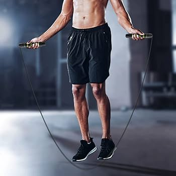

What is Cardio?
Cardio, short for cardiovascular exercise, involves any activity that increases your heart rate and helps improve the efficiency of your cardiovascular system. Cardio exercises are essential for maintaining heart health, improving stamina, and burning calories.
Benefits of Cardio
- Boosts heart health
- Burns calories and supports weight loss
- Improves stamina and endurance
- Enhances mood and reduces stress
- Promotes better sleep
Popular Cardio Exercises
Running
Running is a high-intensity cardio workout that burns calories quickly and improves heart and lung function.
Cycling
Cycling is an excellent low-impact exercise that strengthens the legs and boosts cardiovascular endurance.
Swimming
Swimming works your entire body and is a great low-impact cardio option for people with joint issues.
Jump Rope
Jumping rope is a quick, portable, and effective way to boost cardiovascular fitness and coordination.